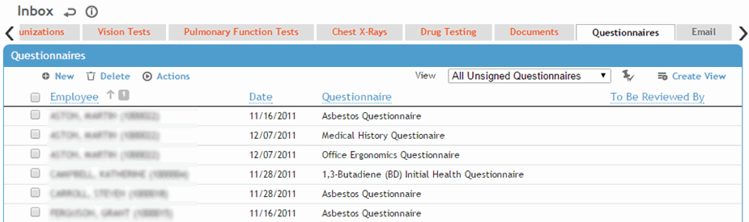

The default view of this list displays all questionnaires that have not been signed. The To Be Reviewed By column is filtered by the user's default practitioner. For more information, see Entering Responses to a Questionnaire.

To generate a questionnaire with all questions and the user’s responses and comments, choose Actions»Print.
To generate a blank questionnaire with the questions and all possible responses, choose Actions»Print Blank. The questionnaire opens in a separate window, where you can use the toolbar options to print it or send it as an email attachment.
To export a questionnaire to an Excel spreadsheet, choose Actions»Export to Excel.
Click Yes to open the questionnaire in Excel, or No to save as a file you can open later. The selected questionnaire (including questionnaire name and code, employee name and number, questions, and any default answers) is saved as an XML file which can be opened in Excel.
Once the questionnaire is complete, you can choose Actions»Import Questionnaire to import the employee’s responses into Cority (see Importing Questionnaires).